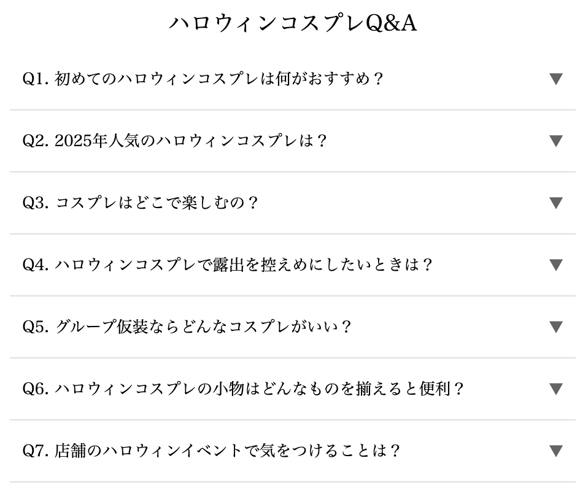

2023.09–2025.08
縦に長い商品一覧
各カテゴリに商品を9点ずつ並べていたため、
下の商品まで何度もスクロールする必要がありました。
LaLaTulle01 / 04
期間 –
デザインを見直して商品一覧へ進みやすくしました。
使用ツール
カテゴリを横スクロールで選べるメニューを設け、
全商品とセールへのリンクを追加しました。


バナーのデザインが古くなっていたため、作り直しました。
BEFORE


AFTER


2023.09–2025.08
各カテゴリに商品を9点ずつ並べていたため、
下の商品まで何度もスクロールする必要がありました。

2025.09–2025.10
各カテゴリの商品を9点から6点に減らし、
次のカテゴリまでのスクロールを短くしました。

2025.11
カテゴリをタブで切り替える方式を採用し、
ページを大幅に短縮しました。

–

ページの最後に人気商品を載せ、
続けて商品を探せるようにしました。


衣装の選び方や着用シーンに関する質問に答え、
schema.orgのFAQPage構造化データも追加しました。
パンくずリストからハロウィンページに戻れないページも含め、対象のすべてのカテゴリページにボタンを追加しました。
ハロウィンページ
集計期間 ／ 2024–2026年の各10月1日〜31日
初回改善後 ／ 10月1日〜31日 ／ 2024年比
商品リスト閲覧数
商品詳細閲覧数
売上
タブ切り替え後 ／ 10月1日〜31日 ／ 2025年比
直帰率
シーズン 10月1日〜31日 ／ 2025年と2024年の比較
初回改善後は商品一覧と詳細の閲覧が増え、
タブ切り替え後の翌年は直帰率が下がりました。
Googleで実際の検索順位を見る
ハロウィンコスプレ